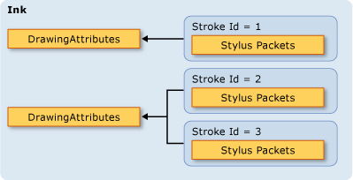
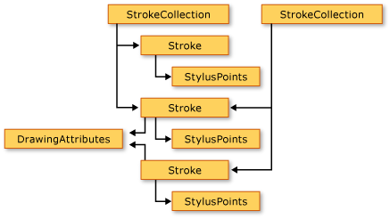
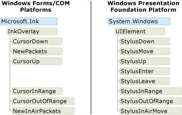
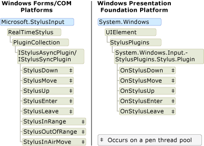

Объектная модель рукописного ввода: Windows Forms и COM по сравнению с WPF
Существует три платформы, поддерживающие рукописный ввод: Платформа Tablet PC Windows Forms, платформа COM для планшетных ПК и платформы Windows Presentation Foundation (WPF). Ресурс платформы Windows Forms и COM, аналогичной модели объекта, если объект модели для WPF платформы существенно отличается. В этом разделе обсуждаются различия на высоком уровне, что разработчики, которые работали с одной модели объекта можно лучше понять другой.
Включение рукописного ввода в приложении
Все три платформы поставляют объекты и элементы управления, которые позволяют приложению получать входные данные от планшетного пера. В Windows Forms и COM платформ поставляются с Microsoft.Ink.InkPicture, Microsoft.Ink.InkEdit, Microsoft.Ink.InkOverlay и Microsoft.Ink.InkCollector классы. Microsoft.Ink.InkPicture и Microsoft.Ink.InkEdit являются элементами управления, которые можно добавить к приложению для сбора рукописных фрагментов. Microsoft.Ink.InkOverlay и Microsoft.Ink.InkCollector могут присоединяться к существующему окну с поддержкой рукописного ввода windows и пользовательских элементов управления.
Платформа WPF включает InkCanvas элемента управления. Вы можете добавить InkCanvas в приложение и начать сбор рукописных данных немедленно. С помощью InkCanvas, пользователь может скопировать, выберите и измените размер рукописного ввода. Можно добавить другие элементы управления для InkCanvas, и пользователь может вводить рукописные данные в эти элементы управления тоже. Можно создать пользовательский элемент управления, поддержкой рукописного ввода, добавив InkPresenter и сбора его точек пера.
В следующей таблице перечислены дополнительные сведения о включении рукописного ввода в приложении:
| Для этого... | На платформе WPF... | На платформах Windows Forms и COM... |
|---|---|---|
| Добавление элемента управления с поддержкой рукописного ввода в приложение | См. в разделе начало работы с рукописными данными. | См. в разделе утверждений автоматического формирования образца |
| Включить рукописный ввод в пользовательский элемент управления | См. в разделе создания заметки рукописного ввода входного элемента управления. | См. в разделе рукописного ввода в буфер обмена образец. |
Данные рукописного ввода
На платформах COM и Windows Forms Microsoft.Ink.InkCollector, Microsoft.Ink.InkOverlay, Microsoft.Ink.InkEdit, и Microsoft.Ink.InkPicture каждого предоставляют Microsoft.Ink.Ink объекта. Microsoft.Ink.Ink объект содержит данные для одного или нескольких Microsoft.Ink.Stroke объектов и предоставляет общие методы и свойства для управления эти штрихи. Microsoft.Ink.Ink объекта управляет временем существования штрихов, она содержит; Microsoft.Ink.Ink объект создает и удаляет росчерки, которые ему принадлежат. Каждый Microsoft.Ink.Stroke имеет идентификатор, который является уникальным в пределах родительского Microsoft.Ink.Ink объекта.
На платформе WPF System.Windows.Ink.Stroke класс владеет и управляет своим временем существования. Группы Stroke объектов можно собирать вместе в StrokeCollection, который предоставляет методы для общих рукописного ввода операций по управлению данными такие как попаданий тестирования, стирание, преобразование и сериализация рукописных данных. Объект Stroke может принадлежать ноль, один или более StrokeCollection объектов на любом предоставить времени. Вместо того, Microsoft.Ink.Ink объекта, InkCanvas и InkPresenter содержат System.Windows.Ink.StrokeCollection.
В следующей паре иллюстраций сравниваются объектные модели данных рукописного ввода. На платформах COM и Windows Forms Microsoft.Ink.Ink объект ограничивает время существования Microsoft.Ink.Stroke объекты и пакеты пера принадлежат отдельным штрихов. Два или несколько штрихов можно ссылаются на тот же Microsoft.Ink.DrawingAttributes объекта, как показано на следующем рисунке.

На WPF, каждая System.Windows.Ink.Stroke — это объект среды выполнения, которая существует до тех пор, пока что-нибудь имеет ссылку на него. Каждый Stroke ссылки StylusPointCollection и System.Windows.Ink.DrawingAttributes объект, который также являются объектами среды CLR.

В следующей таблице сравниваются способы выполнения некоторых общих задач на WPF платформы и платформы Windows Forms и COM.
| Задача | Windows Presentation Foundation | Windows Forms и COM |
|---|---|---|
| Сохранить рукописный ввод | Save | Microsoft.Ink.Ink.Save |
| Загрузка рукописного ввода | Создание StrokeCollection с StrokeCollection конструктор. | Microsoft.Ink.Ink.Load |
| Проверка нажатия | HitTest | Microsoft.Ink.Ink.HitTest |
| Скопируйте рукописного ввода | CopySelection | Microsoft.Ink.Ink.ClipboardCopy |
| Вставьте рукописного ввода | Paste | Microsoft.Ink.Ink.ClipboardPaste |
| Доступ к настраиваемым свойствам в коллекцию штрихов | AddPropertyData (внутренне хранятся и доступны через свойства AddPropertyData, RemovePropertyData, и ContainsPropertyData) | Используйте Microsoft.Ink.Ink.ExtendedProperties |
Совместное использование рукописного ввода между платформами
Несмотря на то, что платформы имеют разные объектные модели для рукописных данных, совместное использование данных между платформами является очень простым. В следующих примерах сохранить рукописный ввод из приложения Windows Forms и загрузка рукописный ввод в приложение Windows Presentation Foundation.
using Microsoft.Ink;
using System.Drawing;
Warning
It looks like the sample you are looking for does not exist.
/// <summary>
/// Saves the digital ink from a Windows Forms application.
/// </summary>
/// <param name="inkToSave">An Ink object that contains the
/// digital ink.</param>
/// <returns>A MemoryStream containing the digital ink.</returns>
MemoryStream SaveInkInWinforms(Ink inkToSave)
{
byte[] savedInk = inkToSave.Save();
return (new MemoryStream(savedInk));
}
Warning
It looks like the sample you are looking for does not exist.
using System.Windows.Ink;
Warning
It looks like the sample you are looking for does not exist.
/// <summary>
/// Loads digital ink into a StrokeCollection, which can be
/// used by a WPF application.
/// </summary>
/// <param name="savedInk">A MemoryStream containing the digital ink.</param>
public void LoadInkInWPF(MemoryStream inkStream)
{
strokes = new StrokeCollection(inkStream);
}
Warning
It looks like the sample you are looking for does not exist.
В следующих примерах сохранить рукописный ввод из приложения Windows Presentation Foundation и загрузка рукописный ввод в приложении Windows Forms.
using System.Windows.Ink;
Warning
It looks like the sample you are looking for does not exist.
/// <summary>
/// Saves the digital ink from a WPF application.
/// </summary>
/// <param name="inkToSave">A StrokeCollection that contains the
/// digital ink.</param>
/// <returns>A MemoryStream containing the digital ink.</returns>
MemoryStream SaveInkInWPF(StrokeCollection strokesToSave)
{
MemoryStream savedInk = new MemoryStream();
strokesToSave.Save(savedInk);
return savedInk;
}
Warning
It looks like the sample you are looking for does not exist.
using Microsoft.Ink;
using System.Drawing;
Warning
It looks like the sample you are looking for does not exist.
/// <summary>
/// Loads digital ink into a Windows Forms application.
/// </summary>
/// <param name="savedInk">A MemoryStream containing the digital ink.</param>
public void LoadInkInWinforms(MemoryStream savedInk)
{
theInk = new Ink();
theInk.Load(savedInk.ToArray());
}
Warning
It looks like the sample you are looking for does not exist.
События из планшетное перо
Microsoft.Ink.InkOverlay, Microsoft.Ink.InkCollector, и Microsoft.Ink.InkPicture в Windows Forms и COM платформ получают события при пользователя входных данных пера данных. Microsoft.Ink.InkOverlay или Microsoft.Ink.InkCollector присоединяется к окна или элемента управления и может подписываться на события, вызываемые входными данными планшета. Поток, на котором выполняются эти события зависит от того, вызываются ли события с помощью пера, мыши, или программно. Дополнительные сведения о потоке в связи с этими событиями, см. в разделе Общие соображения Threading и потоков, на котором срабатывают события.
На платформе Windows Presentation Foundation UIElement класс имеет события с помощью пера. Это означает, что каждый элемент управления предоставляет полный набор событий пера. События пера имеют нисходящей и восходящей маршрутизации событий пар и всегда выполняется в потоке приложения. Дополнительные сведения см. в разделе Routed Events Overview.
На следующей схеме показано сравнение объектные модели для классов, которые инициируют события пера. Объектную модель Windows Presentation Foundation показывает только события восходящей маршрутизации, не им события нисходящей маршрутизации.

Данные пера
Все три платформы предоставляют способы перехвата и обработки данных, поступающих от планшетного пера. На платформах COM и Windows Forms, это достигается путем создания Microsoft.StylusInput.RealTimeStylus, присоединения к нему окна или элемента управления и создания класса, реализующего Microsoft.StylusInput.IStylusSyncPlugin или Microsoft.StylusInput.IStylusAsyncPlugin интерфейс. Затем пользовательский подключаемый модуль добавляется к коллекции Microsoft.StylusInput.RealTimeStylus. Дополнительные сведения об этой объектной модели см. в разделе архитектура потоке на платформах.
На WPF платформы, UIElement класс предоставляет доступ к коллекции подключаемых модулей, разработке похожую Microsoft.StylusInput.RealTimeStylus. Для перехвата данных пера, создайте класс, наследуемый от StylusPlugIn и добавить объект StylusPlugIns коллекцию UIElement. Дополнительные сведения об этом взаимодействии см. в разделе перехват ввода, осуществляемого пером.
На всех платформах пул потоков получает данные рукописного ввода с помощью событий пера и отправляет его в потоке приложения. Дополнительные сведения о работе с потоками на платформах Windows и COM, см. в разделе Threading вопросы потоке на платформах. Дополнительные сведения о потоке на программное обеспечение для презентаций Windows, см. в разделе потоковая модель рукописного ввода.
На следующем рисунке сравниваются объектные модели для классов, которые получают данные пера в пуле потоков пера.
